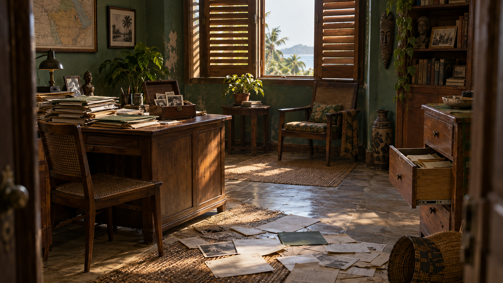

EL LEGADO DE MANDJI
Tu investigación
Continúa el capítulo actual o vuelve a uno de los capítulos anteriores.

CAPÍTULO IActual
La misión
Examina el encargo, descubre las primeras pistas y reúne al equipo.
Entrar al capítulo →
CAPÍTULO IIActual
La expedición interrumpida
Explora el archivo y reconstruye lo sucedido en la expedición de 1998.
Entrar al capítulo →
CAPÍTULO IIIActual
Tras los pasos de Daniel
Investiga su revista digital, localiza su antigua casa y busca entre sus papeles.
Entrar al capítulo →En una misión completada puedes volver a jugar o revisar tus pistas. Repetirla conserva tu partida original.